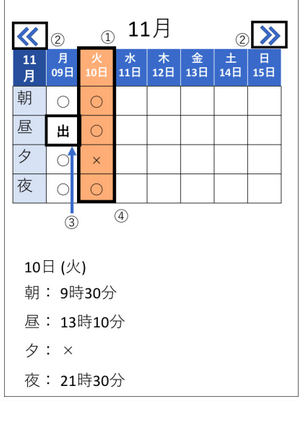
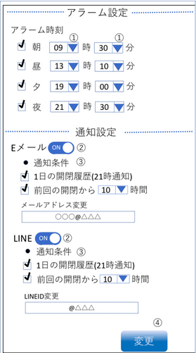

使い方
「履歴」 の見方

- ①閲覧日は橙色で表示されます。
- ②
ボタンで 1週間前、
ボタンで 1週間後の履歴を閲覧できます。
- ③ご家族がお出かけ中は「出」と表示されます。
- ④ページ下部に選択した日付の薬箱を開閉した時間が表示されます。
選択している日付は黒枠で囲まれています。
「使用設定」 の使い方

- ①ご家族がお薬を飲み忘れた時に薬箱から鳴るアラームの時間を設定できます
- ②E メールまたは LINE への通知の ON/OFF を切り替えることができます
- ③E メールまたは LINE へ通知を行う条件を設定できます
- ④変更ボタンで使い方ページでの変更箇所を全て反映させます